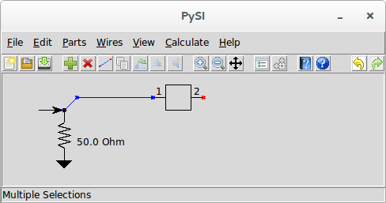
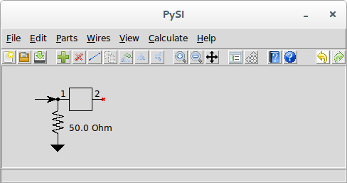
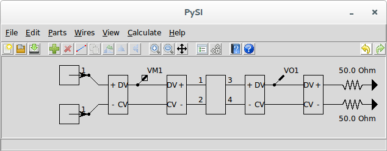

Prev Output Probes for Virtual Probing
Up Virtual Probing
Setting Calculation Properties for Virtual Probing Next
Stimuli
Stimuli in virtual probing is surely the most confusing aspect.
Virtual probing operates in theory by accounting for all of the waves flowing around a system using observations of voltages at the measurement probe points. Now, since voltages are proportional to the sum of the forward and backward going waves at a given node, so how can you tell which way they are going? Well, if you look long enough such that any waves entering prior to the time you started looking have either died down or are insignificant, then everything works out fine. But the application needs to know where they are and which device ports they emanate from.
For a properly constrained system, you should have as many measurement probes as stimuli. For example, barring other sorts of numerical problems, for a single-ended transmitter, one measurement probe and one stimulus is enough. If the system contains a differential transmitter, two stimulus are required. Two measurement probes are required, or some assumptions are needed to further constrain the stimuli is required. Constraining stimuli is performed using independent and dependent stimuli and specifying the constraints through interconnections and weights.
To place an independent stimulus, use Add Stim↓, leave the weight as 1.0, and place the tip of the arrow directly on the port of a device as shown:

The Stim↓ must be connected to one and only one device port, as shown above. This means that if two device ports are connected together, you must separate them with a small bit of wire, and connect the Stim↓ to the device port you intend. In other words, don’t do this:

This is Wrong

Remember, a Stim↓ defines the place of wave emanation from a port. Connecting it to two device ports, or in the middle of a wire, does not specify a device port from which waves emanate.
If you have a situation where you have have more stimuli than measurements, you can make the stimuli connected directly to the device ports dependent on an independent stimulus.
For example, suppose you have the following situation:

This virtual probing schematic says that you have two independent, single-ended sources of stimuli at a transmitter and that you are measuring the differential voltage at the transmitter and desiring to see the differential waveform at a perfectly terminated receiver. Here we have two stims and only one measurement probe which makes the system unsolvable.
We can rectify the situation by adding an independent stim and making the two stims at the transmitter output dependent on it, like this:

Although the two stims at the transmitter only showed one connection point at the arrow tip, the back of the arrow can also be connected. When the back of a stim is connected through a wire to arrow tip of another stim, it becomes dependent on it by an amount defined by the weight of the dependent stim. We change the weight by invoking Edit Properties↓ with the stim selected.
This arrangement says that the top stim is now the same as the independent stim and that the bottom stim is the negative of the independent stim. Since we now have only one independent stim, the system is solvable.
Note that this does not imply that the voltage waveform will be balanced at the transmitter (i.e. no common mode component), only that we have promised that the waves emanating from the transmitters are balanced.